Firewall Wizard v5xxxx
Scope
This section provides instructions for installing the PRO360° Remote Diagnostics Remote Diagnostics hardware and software.
Parts and Materials Required
- Completed AW-19118 Panther / Panther Scalable Solutions and Panther Fusion Site Assessment
 Firewall Kit
Firewall Kit
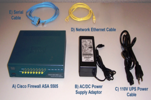
- Cisco Firewall ASA 5505 (1)
- Ac/DC Power Supply Adapter (1)
- 110V UPS Power Cable (1)
- Network Ethernet Cables (2)
- Serial Cable (1)
- Firewall Power Supply-to-UPS or PDU Cable (depends on the UPS in use: 110V vs 220V)
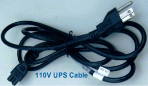
- Firewall Wizard Software CD
- For Panther System 220V UPS or PDU, 220V UPS Cable
- USB-to-Serial Adapter Cable (for use on FSE/ISE Service Laptops with USB Ports instead of Serial Ports)
- FSE/ISE Service Laptop running Microsoft Windows XP or 7 Operating System
- Network Ethernet Cables
Time Required
- 30 minutes (as long as the Panther System Site Assessment Form contains complete and accurate networking information)
Procedure
I. Installing the Firewall Wizard Software
This section describes how to install the Firewall Wizard Software. If it is already installed on the Service Laptop, skip to the next section, II. Configuring the Firewall.
- Close all applications running on the Service Laptop.
- Insert the Firewall Wizard Installation CD.
- If the Installation Program does not start automatically, navigate to the CD and double click the folder named Wizard X.X.X.X, then double-click the FirewallWizard file.
- Accept all default suggestions by clicking Next on each screen and install the software.
- When the installation is complete, verify that the desktop contains an icon labeled FirewallWizard X.X.X.X, where X.X.X.X is the current software version number.
- Double-click the Wizard icon and verify that the software starts and displays the Welcome to the Gen-Probe Firewall Configuration Wizard page.
II. Configuring the Firewall
This section describes how to custom configure the Firewall using network information supplied in the Network Configuration section of the Panther System Site Assessment Form.
- Turn on the laptop and wait for the Operating System (XP or 7) to start.
- Remove all cables from the Firewall.
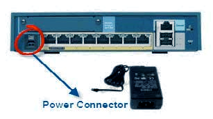
- Plug the appropriate Firewall Power UPS Cable into the AC/DC Adapter.
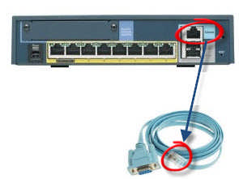
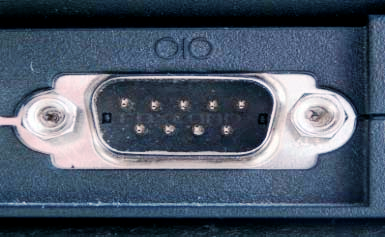
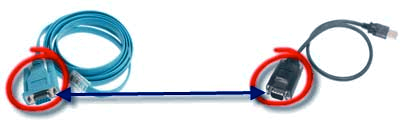
- Plug the USB connector into the Service Laptop.
- If the Microsoft Windows XP or 7 Operating system begins to install a driver, wait until the process finishes. Microsoft may try to install a driver for the USB device. If this occurs, see installation instructions in SOP 19-02-03 Installation of USB-to-Serial Converter Multi1USV RS232 XP PC.
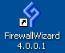
The Welcome page appears.
- Ensure that the green Status light on the Firewall is on and steady for at least 60 seconds.
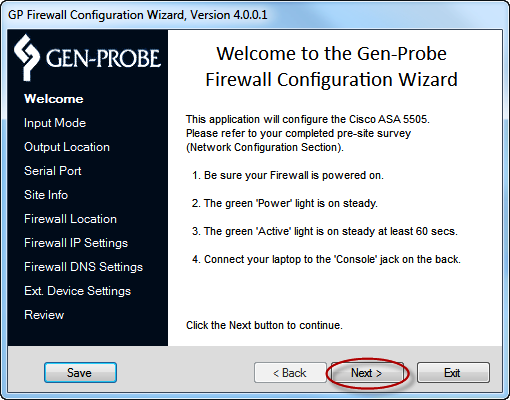

Note—An existing configuration file can be loaded into the Wizard and can be used in the following situations:
- When completing a previous configuration attempt.
- When re-configuring the Firewall.
Starting with a New Configuration File
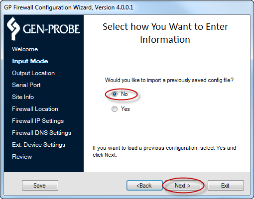
- Continue to D. Selecting an Output Location.
Loading a Previously Saved Configuration File
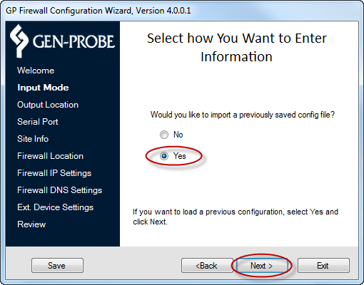
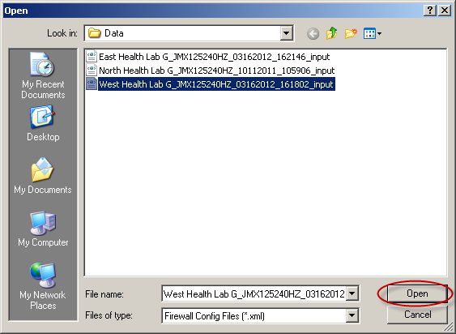
- Select the configuration file and click Open.
A File Load dialog appears.
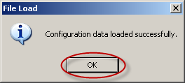
- Continue to D. Selecting an Output Location.
Configuration files can be stored to the default directory displayed on the Output Location page or to a new location.
Note—Configuration file descriptions are listed in Appendix A—Saved Configuration. If Saving a Configuration File to the Default Directory
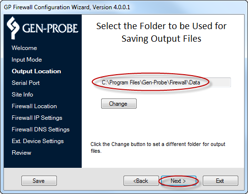
- Continue to E. Configuring the FSE Laptop Serial Port.
If Saving a Configuration File to a Location Other than the Default Directory
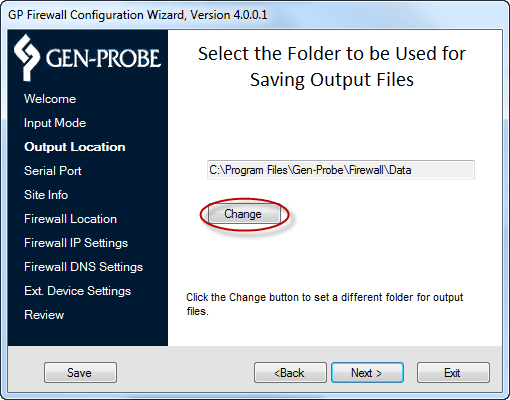
A Browse for Folder dialog appears.
- Navigate to the desired location for the configuration file.
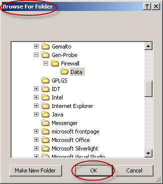
- Click Next.
- Continue to E. Configuring the FSE Laptop Serial Port.
When the Service Laptop is connected to the Firewall, the Wizard Serial Port page will verify and test the connection automatically.
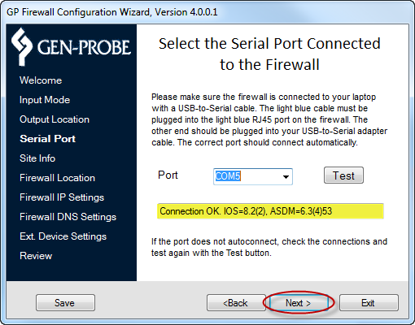
Testing Connection to COMx displays while the Wizard tests the connection.
Connect OK, IOS=x, ASDM=x displays when the test is complete.
- If there are no issues, click Next to continue to F. Setting Site and Instrument Information.
- If No connected ports displays, check to be sure the cables are connected.
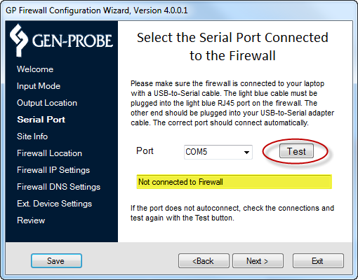
- When the connection is confirmed, continue to F. Setting Site and Instrument Information.
This section provides the configuration output files with the default filenames for ease of retrieval. This section also allows the FSE/ISE to select which Instrument type with which the Firewall will be used. This information can be found in the Panther System Site Assessment Form.
Note—Entries into the Site Info page text boxes are limited to 35 alpha/numeric characters and spaces.
- On the Site Info page, enter the following information:
Site Name
FSE/ISE full name
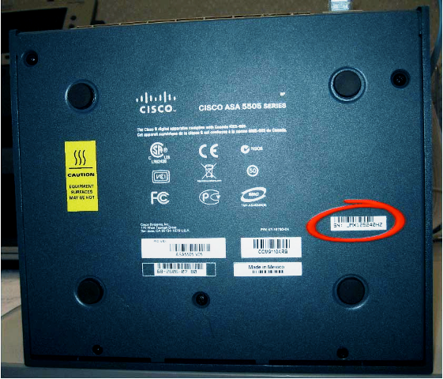
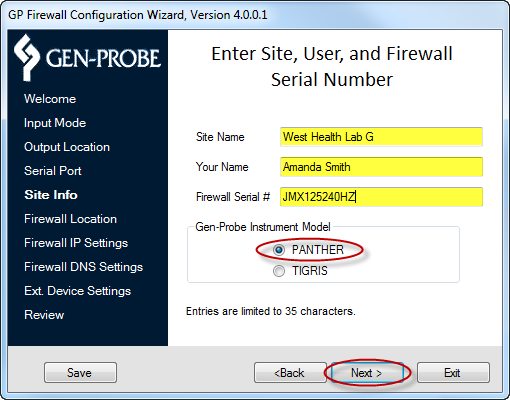
The Wizard can configure the Firewall to communicate with a Customer Site or with an internal Gen-Probe Development Environment.
Note—Customer Site is the default setting for FSE installs. If the Firewall will be used at a Customer Site
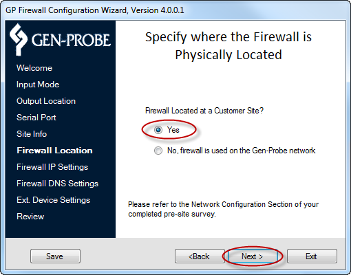
- Continue to H. Entering IP Address Settings.
If the Firewall will be used at Gen-Probe
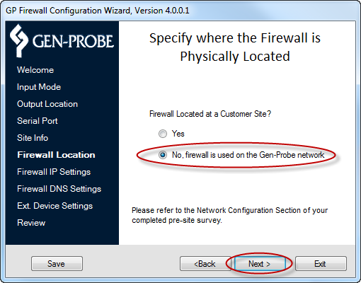
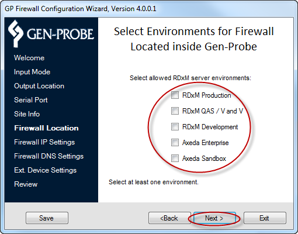
- Select at least one of the following server environments:
- RDxM Production
- RDxM QAS / V and V
- RDxM Development
- Axeda Enterprise
- Axeda Sandbox
- Click Next.
The Wizard can configure the Firewall to allow a customer's network to assign a temporary IP address (DHCP) or to assign a permanent IP address (Static IP Address). This information is contained in the Panther System Site Assessment Form.
For DHCP Addressing
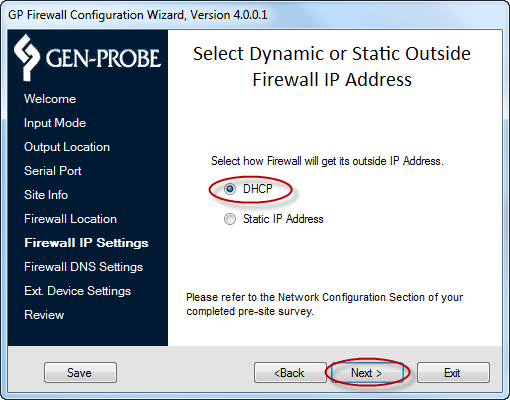
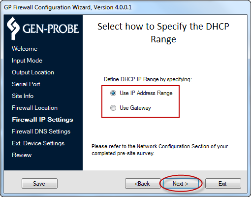
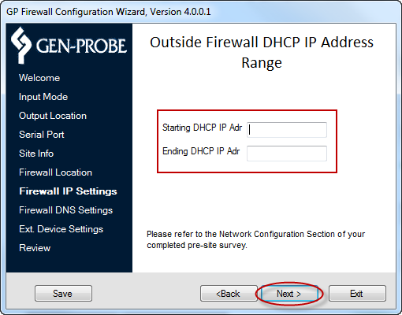
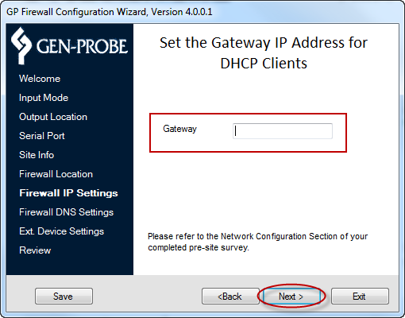
For Static IP Addressing
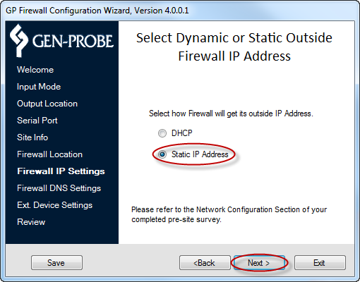
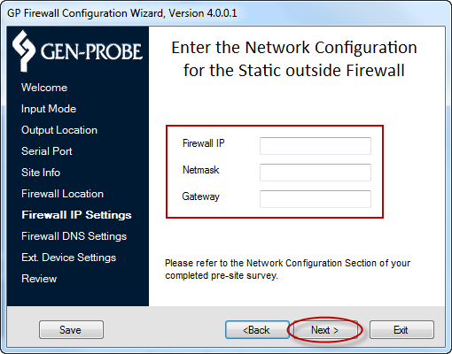
DNS must be configured on the Firewall, because the PRO360° NTR Global and the PRO360° RSL applications use domain names (i.e., RDxM.Gen-Probe.com) to access Gen-Probe servers. DNS allows this software to resolve these domain names to IP Addresses (i.e., RDxM.Gen-Probe.com resolves to 70.164.126.19).
The Preferred DNS IP and Alternate DNS IP will be pre-populated. Both DNS IP Address entries are required. The default values can be deleted and replaced with customer-selected values, if preferred. This information can be found in the Panther System Site Assessment form.
The Wizard requires two DNS IP non-duplicate addresses to be entered for configuring the Firewall. Any combination of default addresses and customer-selected values can be used to configure the Firewall.
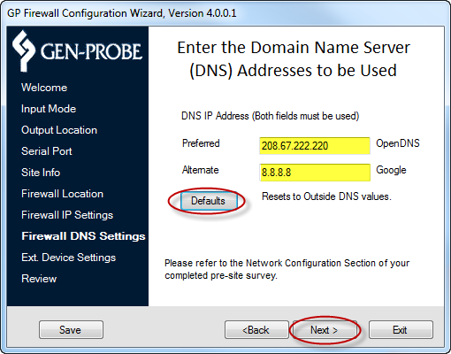
- To reset to the default values, click Defaults.
- Click Next.
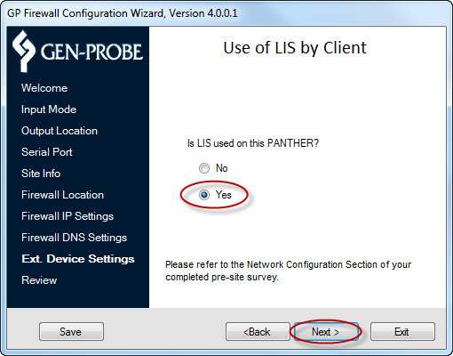
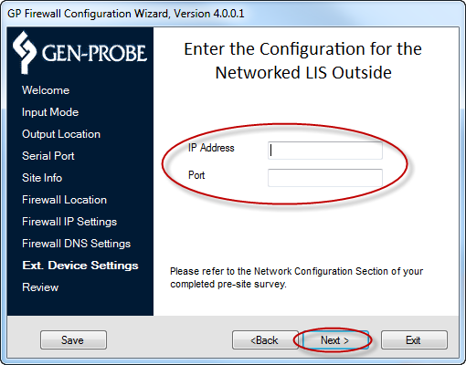
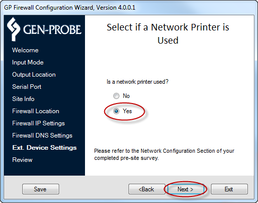
After all parameters have been entered into the Wizard, a Please Review Your Input page displays all entries.
- Verify that each entry on the page matches the information in the Network Configuration section of the Panther System Site Assessment Form.
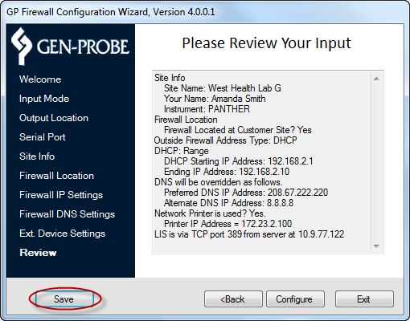
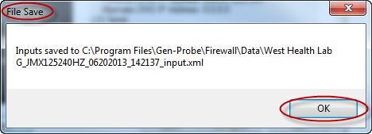
- Click OK.
- Confirm that the Service Laptop is properly connected to the Firewall.
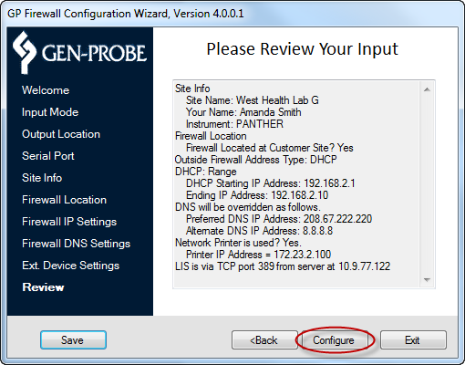
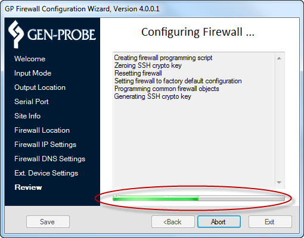
Note—Do not run any other applications (such as email or Internet Explorer) while the configuration is in progress.
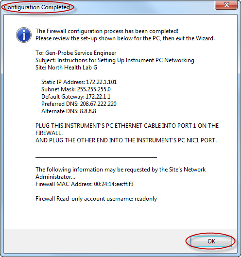
- Read the Configuration Completed pup-up screen and click OK.
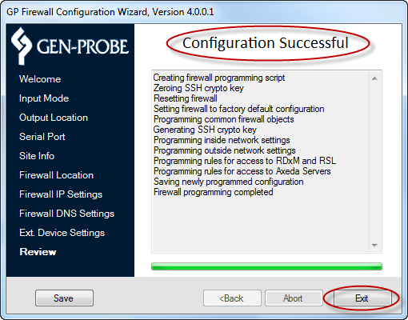
 button at the top of the page to send feedback, comments, or change requests.
button at the top of the page to send feedback, comments, or change requests.